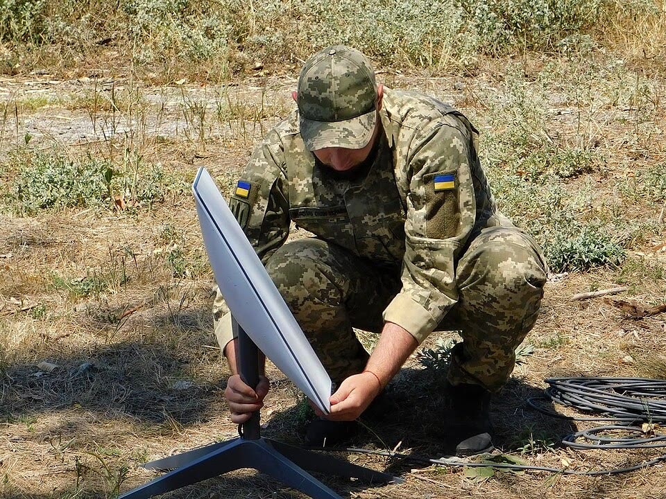

Foto: Support Forces of Ukraine Command, CC BY 4.0Zelensky: Starshield di nuovo frenato a 160 km/h, «aiuta i russi»
Chi abbia rallentato i satelliti di Kiev non lo dice nessuno, ed è questo il problema: chi paga gli aiuti, Italia compresa, ha diritto a regole scritte su chi può spegnere i servizi agli alleati, e a più di un fornitore.